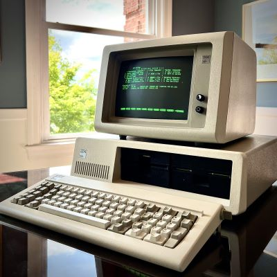

IBM Personal computer
The IBM Personal Computer, released in 1981, marked a significant moment in computing history. It was one of the first mass-produced PCs and set standards for hardware and software that are still influential today. Powered by an Intel 8088 processor, it featured a modular design that allowed for upgrades and customization. Running MS-DOS as its primary operating system, the IBM PC popularized the use of personal computers in business and homes, leading to a rapid expansion of the PC market and establishing IBM as a key player in the industry. Its open architecture also encouraged third-party software and hardware development, fostering a vibrant ecosystem.